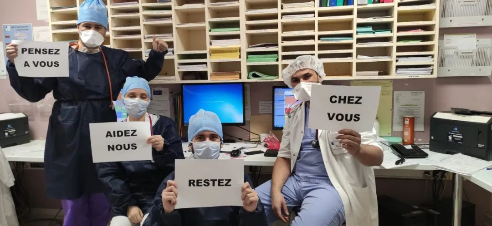
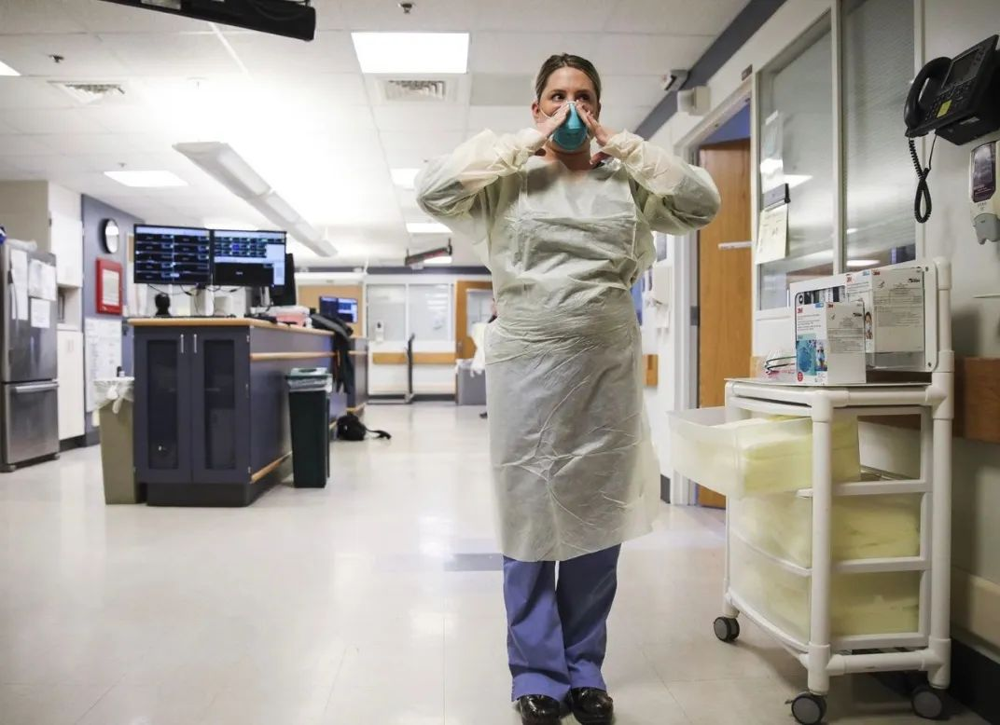

“醒了”的美国正在发生什么
原文链接 备份链接 面对这场大流行 美国开始“自下而上”发动一切力量来抗疫 3月19日，美国总统特朗普 （前右） 在华盛顿联邦紧急措施署总部参加电话会议。 “醒了”的美国正在发生什么 本刊记者/彭丹妮 *发于2020.3.30总第941 …
记者/颜星悦 实习记者/龙天音
编辑/计巍 宋建华

自疫情爆发以来，法国已有一千余人死亡（图/路透社）
截至3月26日，全球共有新冠确诊病例46万余例，死亡病例数超过21000例。意大利仍是中国以外累计确诊病例数最多的国家，确诊人数为74386例，美国确诊人数紧随其后，确诊人数达到66132例。
随着新冠肺炎疫情在全球的蔓延，不少国家出现了医疗资源和防护物资的紧缺。一些国家的医护人员甚至在网络上发起求援，希望能够从各方得到医疗防护装备的支援。
在深一度的采访中，一名自述已经出现新冠肺炎疑似症状的西班牙医学研究员表示，她最近整晚都在打电话，和物流、政府人员、志愿者等各种工作人员交涉，寻找资金和物资。“我们的医生和护士做了测试，他们很多人的测试结果显示是阳性的”。
美国纽约一家医院里的一位ICU医生在网络上发出求援信息：“医疗系统已经瘫痪了，我们医院的ICU床位快用完了。很多护士已经生病了，但一些已经出现症状的医护人员仍在被迫工作着。”
法国巴黎一名急诊室医生在接受深一度采访时表示，“我们现在做的事，就是减慢病毒的传播速度，不让所有人都立刻染上，（否则）我们的医疗系统会承受不了。”她还提到，希望可以获取更多的关于中国对抗新冠病毒的经验，“我们对种这病毒的了解还不足，想要获得更多的信息。”
以下是这些医护人员的自述：

医学研究员Isabel Iguacel
@西班牙马德里
截至3月26日，西班牙新冠肺炎确诊人数达49515人，死亡人数3647人。35岁的Isabel Iguacel是一名医学研究员，就职于萨拉格萨大学的康复医学护理系。疫情期间，她很多时候和医护人员一起工作，她看到有些护士会穿上一个像塑料袋一样的东西来保护自己，而她的护士朋友，因为没有医用防护面具，只能借园丁邻居的头盔来保护自己。
3月15日，我出现咳嗽和喉咙痛的症状，并且开始发烧，肌肉酸疼，身体疲惫。作为一名医学博士，我知道自己有可能已经感染了新冠病毒，因为我和确诊患者有过接触。
我的姐姐和我在一起，她很快也出现了类似的症状，她想打西班牙的“病毒热线电话”，但是这条电话线实在太忙了。我告诉她不用打了：“每个人都在打这个电话，他们不会告诉我们任何事情，他们只会告诉你喝水、服用扑热息痛。”
很多时候我和医生们一起工作，我非常清楚医院的情况。这个电话打通之后，他们会问你有什么样的症状，根据症状的严重程度判断去不去你家，给不给你做检查。
但是他们几乎谁家都不会去，甚至那些直接跑去医院的人也不会得到检测。只有呼吸困难的人、老年人、免疫系统出现问题的人才能测试。
这不是医院的错，有症状的人太多了。政府公布的数字不是准确的，实际上的感染人数会多得多，大多数有症状的人都没有检测。原因很简单，我们没有足够的试剂盒。
目前有两种方法可以检测冠状病毒：一种是PCR核酸检测，另一种是抗体检测，抗体检测的速度更快。这两种检测的试剂盒我们都匮乏。
意大利的疫情，比我们早8天开始，但我们现在已经快追上意大利的感染数据了，而我们至少需要等到4月或者5月才能到达峰值。西班牙的疫情发展得这样快，是因为我们的政府在必要的时候没有采取措施。像中国，一开始发现了感染，很快就关闭了武汉的对外交通，但我们没有。因为他们害怕经济受挫，然而现在经济将遭受更大的打击。
现在在西班牙，每个人都被关在自己的房子里，但是在西班牙还没有封锁时（3月14日西班牙全国范围内实施“封城”措施），所有人都在外面，聚在酒吧、餐厅里，可能有很多人已经被感染了，但是这些人并没有太多症状。如果政府开始对这些轻症、无症的人进行测试，我敢肯定数据会大幅增加。
欧洲现在已经有比中国更多的确诊和死亡案例了，可是你知道，我们整个欧洲只有中国一半的人口。
我们目前没有足够的口罩来保护我们的医护人员，在医院里你通常需要N99和FFP3口罩来保护自己，如果你戴的口罩防护等级低，染上病毒风险就会变大。
我的好朋友是一名护士，在萨拉格萨市一家医院的急症室工作，她在工作中戴的是普通的一次性医用口罩，就算是这样的口罩也需要戴两天。因为没有医用防护面罩，她只能向她的园丁邻居借了一个头盔来用，身上穿的也只是普通的护士服。我还看到过有的护士穿一个像塑料袋一样的东西来保护自己。
最让我着急的是，我们的医生和护士做了测试，他们很多人的测试结果显示是阳性的。昨天一个50岁的护士因为感染去世了。现在处于重症监护中的人死亡率也会很高，因为我们没有足够的呼吸机。
我最近整天都在打电话，和物流、政府人员、志愿者等各种工作人员交涉，寻找资金和物资。昨晚我4点钟入睡，现在是8点，我只睡了4个小时，这些天一直是这样。相比自己，我更担心我的妈妈，她一个人居住，但我不能去看她，因为我很有可能已经感染了。
我们需要中国的帮助，我曾经在上海住过几个月，我的朋友仍然在上海居住，他在中国已经14年了。当中国疫情爆发的时候，我的朋友们把医疗用品从西班牙带到中国，现在我们希望相反的事情可以发生。哪怕只是一个口罩，都能帮助到我们。

Amira所在医院诊室的医护人员呼吁大家“待在家里”
急诊室医生Amira Yaakoubi
@法国巴黎
截至3月26日，法国新冠肺炎确诊人数为25600人，死亡1333例。Amira Yaakoubi是巴黎一家公立医院的急诊室医生，接受深一度采访时她刚刚结束夜班。她表示，自己所在的医院在疫情爆发初期出现了物资匮乏、组织混乱的现象，但是现在都已经好转，“我们现在做的事，就是减慢病毒的传播速度，不让所有人都立刻染上，因为如果一下子有很多重症病例的话，我们的医疗系统会承受不了。”
通常我坐公交车上班，但是最近我开始骑车或者走路上班。我这样做是为了保护其他人。
我在巴黎一家公立医院的急诊室工作，人们来到医院接触的第一个医生，就是我。我接触了很多感染的患者，昨天（3月21日）是我值班，24小时内，我们医院有大概150个患者来到急诊，其中60%至70%的人有新冠病毒相关症状，但是我们收入医院的只有接近20个患者。他们进行了检测，结果还在等待。
我们没有遵从WHO（世卫组织）的指导，我们没有检测所有人。大部分人只是发烧、头痛，症状较轻，呼吸系统良好，没有什么危险的问题，我就给他们发一张医嘱，上面写着需要居家隔离14天，还有需要戴上口罩等建议。
有的人出现呼吸困难，这种时候会给他们做检测——先做X光检测、血检，然后安排他们住进医院，接着给他们做新冠病毒检测。我们的护士会随时照顾着他们，有任何症状都会得到检查。
检测所有人是非常昂贵的。疫情刚开始时，每个地区都设立了一个（检测）中心，所有的病人都在那里接受检测，但是很快就人满为患，检测不过来了。而且我想，这种也是花费巨大的，所以我们已经不这样做了。
现在，如果有人有新冠肺炎症状，就拨打“国家公共卫生服务热线”，接线员会和他们商量，是否让他们来医院接受检测。我的同事在这个呼叫服务中心工作，他告诉我他每天接到无数个电话，热线已经打爆了。还会有一些人不打这个电话，直接就过来医院，也就是来我这里。
我接待的新冠病毒病患数量每天都在增长。为了防范交叉感染，我们把新冠病毒疑似患者的候诊区和其他病患的候诊区分离，并扩大了新冠病毒疑似病患的等待区。
这导致我们没有足够的人手和时间接待其他的病人。我们有一个严重的问题：所有的ICU病床都贡献给了新冠病毒的病人，其他病人想住进ICU都住不上了。昨天有12个医院寻找可以使用的ICU病床，但是没有找到。
如果有医护人员出现症状，我们会立刻给他们进行检测，因为我们不想让他们把病毒传染给病患。目前，我们医院没有出现医护感染的例子，物资也比较充足。但是我听说别的医院里有口罩被窃的事情，我还看到视频里其他医院的医护穿一次性垃圾袋。
我认为法国的防控措施越来越好了。我们现在全面封城（3月17日法国进入疫情的“战争状态”，“最大限度”减少出行），如果你要出门买东西，你需要在警察局的网上填写一个表格，然后打印下来带着，如果你没有这张表格的话，你会被罚款155欧元。法国人的防疫意识也提高了，我看到街上很空，排队的人们也会互相保持距离。
如果疫苗没有研发出来的话，所有人最终都会感染上这个病毒的。我们现在做的事，就是减慢病毒的传播速度，不让所有人都立刻染上，因为如果一下子有很多重症病例的话，我们的医疗系统会承受不了。只有传播速度可以慢下来，才能保证老年人和重症患者受到良好的照顾。
中国对抗击新冠病毒有丰富的经验，我希望中国可以把他们的经验分享给我们，我们对这个病毒的了解还不足，想要获得更多的信息。

美国一名医护展示防护装备（图/Getty Images）
一位ICU医生
@美国纽约
据美国约翰斯·霍普金斯大学发布的实时统计数据显示，截至北京时间3月26日8点44分，全美共报告新冠肺炎确诊病例66132例，死亡947例，其中199例死亡病例发生在纽约。纽约州依旧是疫情最严重的地区，确诊人数已经突破两万，占到全国确诊人数逾四成。
纽约当地一名医生在网络论坛Reddit上发出求助信息，“医疗系统已经瘫痪了，我们医院的ICU床位快用完了。很多护士已经生病了，但一些已经出现症状的医护人员仍在被迫工作着。
我是一名医生，在一家医院的ICU工作（我不能说是哪一家医院，管理部门强迫我们不能这么做）。我们被迫在不安全的环境中工作，防护装备不当。我们被迫保持沉默，但目前的局势让我必须发出声音。
目前，我们采用的隔离方式由空气隔离、接触隔离改为了飞沫隔离、接触隔离。负压病房的好处在于能将空气吸回病房内，这样病原体就无法逃出病房，而普通病房没有这个功能。病毒是可以通过气溶胶传播并在物体表面停留的，而不仅仅是通过飞沫传播 ，因此“飞沫和接触隔离”是不足够的。
我们戴着普通的医用外科口罩、手套，穿着薄薄的纸质长袍照顾病人。
我们恳求政府部门提供更好的防护装备，如防护服或其他可以覆盖全身的装备。这既是为了保护我们自己，也为了防止病毒从一个房间蔓延到另一个房间。在政府拒绝帮助我们的情况下，我们采取了以下预防措施：
由于我们从膝盖到脚的部位全部暴露，我们申请了靴子，但供应有限，所以我们用垃圾袋套住脚，并用胶带封死固定。
我们的防护袍可以遮住从肩膀到膝盖的部位，但是我们的脖子完全裸露，所以我们在脖子上缠绕“一次性护垫”，以防止我们从下巴到锁骨的部位暴露出来。
我们在家里穿上自己的手术服去上班，下班之后也穿着同一件手术服回家。当我回家之后，立即把我的手术服丢进洗衣机里。我还把鞋子放在公寓外面的一个盒子里，防止我的公寓被病毒污染。
我有一只N95口罩，我把它收纳在一个纸袋里，因为我必须重复使用它。我只在“高风险的气溶胶化操作”（即插管和心肺复苏）时使用这个口罩。剩下为数不多的N95口罩和麻醉剂一起被锁在一个橱柜里。我们每班或每天会发一个外科口罩，我们走在医院走廊里的时候，只会戴着普通外科口罩，以及我们从家里穿出来的手术服。
医疗系统已经瘫痪了，我们医院的ICU床位快用完了。很多护士已经生病了，她们本不能工作了，但一些已经出现症状的医护人员仍在被迫工作着。我们为了保护自己和阻断传播的要求被完全忽视了。我们不能罢工，因为我们是避免世界末日来临的最后一条防线。
我不知道能做些什么，但我认为这些信息需要分享。我们需要资金购买更多的设备。我们需要立即增加补给。我们需要适当的防护用品，我们需要从头到脚的全面保护。我们不能一个人做这件事。我们不能被忽视。如果我们不能拯救自己的生命，我们就不能拯救他人的生命。
【反侵权公告】本文由北京青年报在今日头条首发，未经授权，不得转载。


封城62天，武汉按下重启键 | 深度报道

复阳不是再感染，密接人群超1.2%隐性感染或发病 | 深度对话
最后的告别 | 深度报道

原文链接 备份链接 面对这场大流行 美国开始“自下而上”发动一切力量来抗疫 3月19日，美国总统特朗普 （前右） 在华盛顿联邦紧急措施署总部参加电话会议。 “醒了”的美国正在发生什么 本刊记者/彭丹妮 *发于2020.3.30总第941 …
原文链接 备份链接 作为一种全新的病毒，新冠病毒的各种特征还在被不断发现和挖掘。 无症状感染者，再一次成为公众所重点关注和警惕的对象。3月20日，学术期刊Nature发表了一篇关于新冠病毒的报道，这篇题为《隐秘的感染者可能引发新一轮疫情暴 …
原文链接 备份链接 无症状感染者正再次成为焦点，这些感染者让新冠疫情的遏止变得更加艰难。 3 月 20 日，《自然》杂志报道称，60% 的新冠感染者可能属于无症状或者症状轻微，而这些感染者可能会导致疫情二次暴发。 无独有偶，3 月 16 …
原文链接 备份链接 导言 岁末年初以来，新冠肺炎疫情蔓延全国。医护人员冲锋在前，病人的生死、同胞的安危，无不牵动着我们的心。近期，我们将陆续推出一系列文章、笔谈，围绕和此次疫情以及历史上类似公共危机相关的政治、经济、法律、文化的复杂成因及 …
原文链接 备份链接 图片来源：图虫 特约作者：钱伯彦 “ 德国所有医保机构年均380亿欧元的支出在欧洲一枝独秀，远超法国的230亿欧元和英国的140亿欧元。 ” 新冠病毒加速肆虐老迈的欧洲大陆。 就公开的确诊数而言，意大利一度超越韩国成海 …